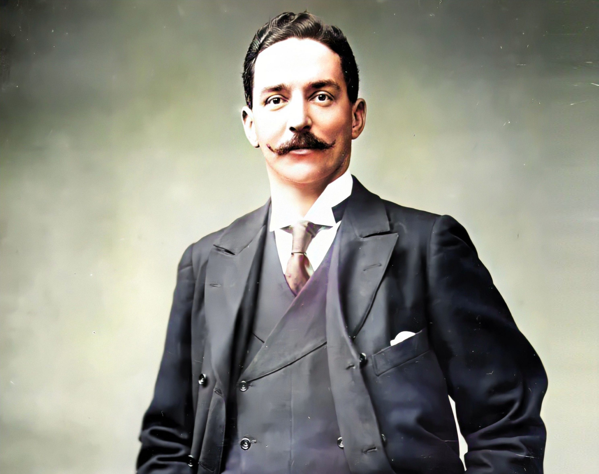
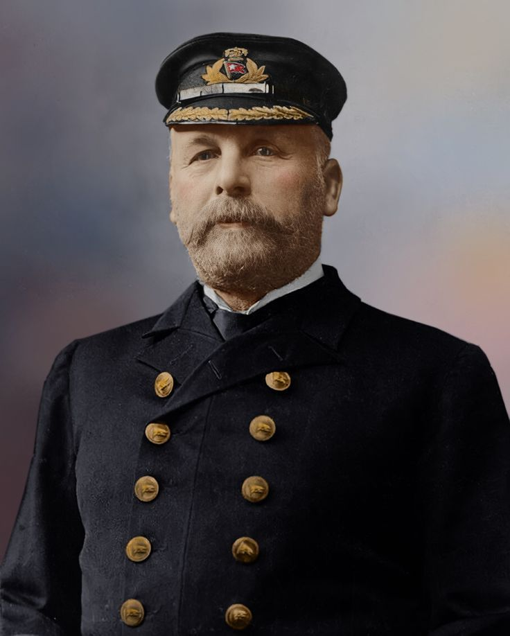

Le parcours dramatique du RMS Titanic.
Le Titanic est un paquebot transatlantique britannique de la White Star Line, construit à l'initiative de Bruce Ismay, un homme d'affaires britannique, et conçu par l'architecte Thomas Andrews des chantiers navals de Harland & Wolff. Sa construction débute en 1909 à Belfast et se termine en 1912. C'est le plus luxueux et le plus grand paquebot jamais construit au moment de son lancement. Sa construction fait suite à celle d'un navire quasiment identique, l'Olympic. Le Titanic est pourvu de seize compartiments étanches servant à protéger le navire d'avaries importantes. Les médias lui donnent ainsi une image de navire fiable, même si, contrairement à la légende diffusée après le naufrage, il n'a jamais été considéré comme insubmersible par ses constructeurs.
Le naufrage a été un choc dans le monde entier, et notamment à New York et en Angleterre. Après le naufrage, plusieurs commissions d'enquête ont été menées et leurs conclusions ont servi à améliorer la sécurité maritime, notamment grâce à de nouvelles réglementations. Plusieurs facteurs se conjuguent pour expliquer à la fois le naufrage et le nombre élevé des passagers à ne pas y avoir survécu. Le navire ne disposait pas de canots de sauvetage en nombre suffisant et l'équipage n'avait jamais été entraîné à gérer ce type d'événement. De ce fait, l'évacuation des passagers a été mal organisée et les canots ont été sous-chargés.
Le comportement du Commandant Edward Smith a par la suite été réprimandé, notamment parce qu'il avait maintenu le paquebot à une vitesse trop élevée, compte-tenu des conditions de navigation. Les circonstances météorologiques et climatiques ont également joué un rôle déterminant cette nuit-là.